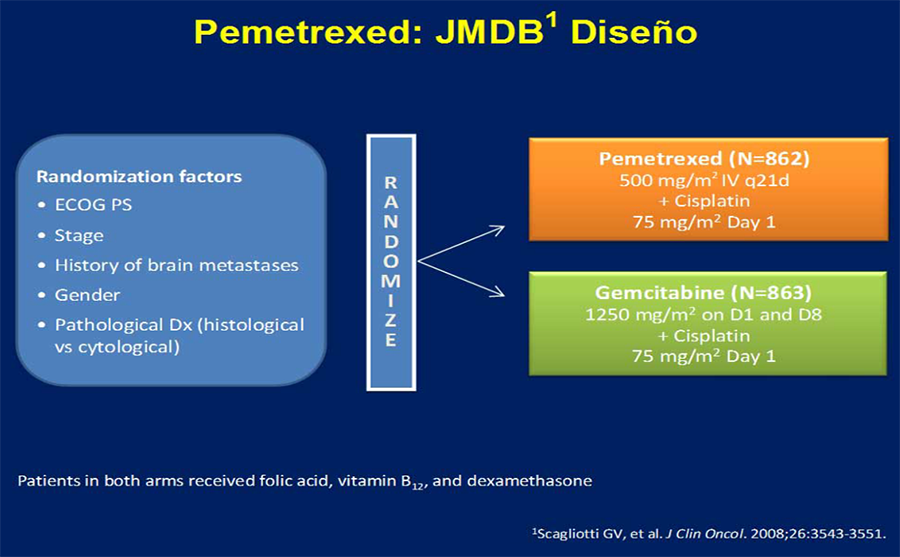
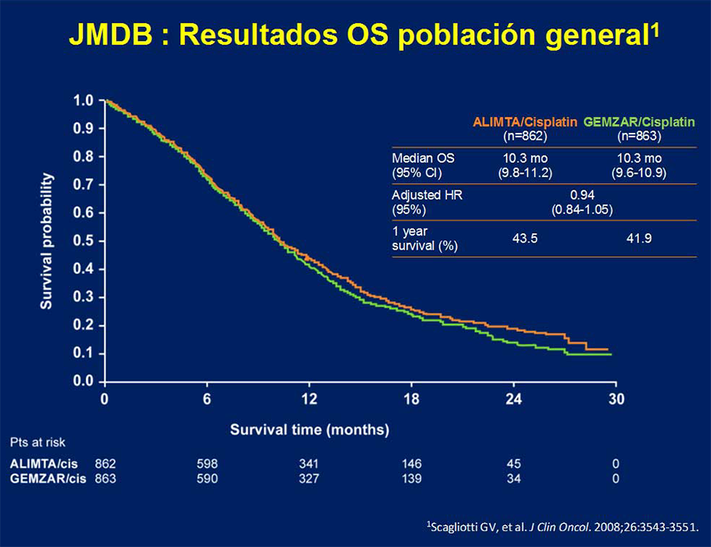
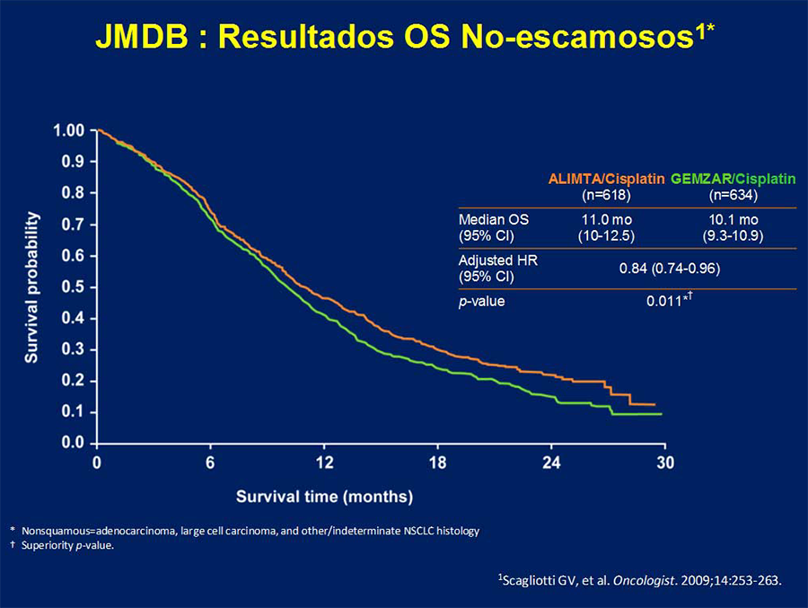

MÓDULO 4 : Tratamiento de la enfermedad avanzada en primera línea

4.2 Factores claves en la decisión del tratamiento de primera línea
Histología
El subtipo histológico (escamoso versus no escamoso) se utiliza como un factor clave para decidir el tratamiento de primera de línea de los pacientes con enfermedad avanzada por los siguientes motivos:
En enfermedad avanzada, se ha observado una actividad diferente de pemetrexed y gemcitabina en función del subtipo histológico.
Los ensayos fase III de Bevacizumab se han centrado en pacientes con cáncer de pulmón no escamoso avanzado, dado el alto riesgo de sangrado en la histología escamosa observado en los estudios iniciales.
El subtipo de adenocarcinoma se asocia a la presencia de mutaciones de EGFR y translocaciones de ALK y de ROS1.
Resultados de pemetrexed según el tipo histológico:
Diseño de no inferioridad.
1725 pacientes incluidos.
Ensayo JMDB: Ensayo fase III en 1a línea de cisplatino + pemetrexed vs cisplatino + gemcitabina.
Se establece un análisis preplanificado por subgrupos en relación con la histología. Adenocarcinoma y carcinoma de células grandes (1000 pacientes, 58% de la población del estudio).
No hubo diferencias en SG en la población general del estudio:
En el subtipo histológico de carcinomas no escamoso: la asociación cisplatino/pemetrexed fue superior a cisplatino/gemcitabina. Por tanto, en histología no escamosa hay evidencia de eficacia superior y menor toxicidad con cisplatino/pemetrexed en pacientes, en comparación con cisplatino/gemcitabina.
En el subtipo histológico escamoso: la asociación cisplatino/gemcitabina fue superior a cisplatino/pemetrexed. Por tanto, pemetrexed no está indicado en pacientes con histología escamosa.
Si existe contraindicación para el empleo de cisplatino o en pacientes de edad avanzada, la combinación de pemetrexed/carboplatino es una opción de tratamiento válida.
  Bevacizumab
Bevacizumab, en combinación con quimioterapia basada en platino, en carcinoma escamoso produjo una alta incidencia de hemoptisis, por lo que su uso se ha restringido a carcinoma no escamoso.
Dos ensayos fase III demostraron un aumento en SG al combinar bevacizumab con carbolatino/ paclitaxel en pacientes con CNMP avanzado con histología no escamosa con ECOG 0-1 (E4599, Sandler NEJM 2006; y BEYOND, J Clin Oncol 2015). Otro estudió fase III evaluó la combinación de cisplatino/ gemcitabina con o sin bevacizumab, demostrando un aumento de la tasa de respuestas, y en SLP pero no en SG con la combinación de Bevacizumab.
Dos metaanálisis han demostrado un beneficio consistente en TR, SLP y SG para la combinación de QT con platino y bevacizumab con respecto a la QT con platino sin bevacizumab en histología no escamosa.
Por lo tanto, Bevacizumab combinado con quimioterapia basada en platino (preferiblemente con palcitaxel) es una opción de tratamiento para pacientes con ECOG PS 0-1 y sin ninguna contraindicación específica para terapia antiangiogénica, con histología de carcinoma no escamoso. Bevacizumab debe seguir siendo administrado hasta la progresión de la enfermedad o toxicidad.
Ensayo fase III de Paclitaxel/Carboplatino +- Bevacizumab en pacientes con NSCLC IIIB/IV (E 4599):
Bevacizumab, carboplatin, and paclitaxel phase III first-line trial in NSCLC (E4599): PFS
Bevacizumab, carboplatin, and paclitaxel phase III first-line trial in NSCLC (E4599): OS
Tratamiento de mantenimiento
Distintos estudios han evaluado el papel del tratamiento de mantenimiento en el CNMP avanzado en pacientes con buen estado general.
Se han evaluado dos estrategias de mantenimiento:
El mantenimiento de continuación: empleo de un fármaco incluido en el tratamiento de primera línea.
El mantenimiento de switch: incorporación de un fármaco no empleado previamente tras 4 c iniciales de QT.
Dos estudios han evaluado el tratamiento de mantenimiento con pemetrexed cada 3 semanas en pacientes con ECOG 0-1 que no habían progresado tras 4 ciclos de quimioterapia con un doblete de cisplatino:
El primer estudio (JMEN) fue con pemetrexed versus placebo en pacientes que habían recibido un doblete con cisplatino que no incluyera pemetrexed (switch maintenance), demostrando un aumento de supervivencia de 15.5 vs 10.3 meses, sólo en pacientes con carcinoma no escamoso (Ciuleaneu et al, Lancet 2009) pero no en los pacientes con histología escamosa:

El segundo estudio (PARAMOUNT) fue con pemetrexed versus placebo en pacientes con histología no escamosa que habían recibido un doblete con cisplatino + pemetrexed (mantenimiento de continuación), demostrando un aumento de supervivencia de 13.9 (IC 95% 12.8-16) vs 11.0 meses (IC 95% 10.0-12.5) (Paz-Ares et al, Lancel Oncol 2012 y J Clin Oncol 2013). La SG a 1 y 2 años fue mayor para pemetrexed (58% y 32% respectivamente) que para placebo (45% y 21%):
Por tanto, se recomienda el tratamiento de mantenimiento con pemetrexed en pacientes con histología no escamosa y ECOG 0-1 que no han progresado tras 4 ciclos de un doblete con quimioterapia basada en platino. Pemetrexed debe mantenerse hasta la progresión o toxicidad inaceptable.
En los estudios en los que se empleó la combinación de QT y bevacizumab, bevacizumab se mantuvo como tratamiento de mantenimiento hasta progresión de enfermedad o toxicidad inaceptable.
El estudio Fase III AVAPERL randomizó a pacientes que habían recibido 4 ciclos de QT con cisplatino/ pemetrexed y bevacizumab a recibir tratamiento de mantenimiento con bevacizumab con o sin pemetrexed. Con el mantenimiento de ambos fármacos se demostró un aumento en la SLP y una tendencia no significativa al aumento de SG.
El estudio fase III PointBreak comparó carboplatino/paclitaxel/ bevacizumab seguido de bevacizumab, con carboplatino/pemetrexed/ bevacizumab seguido de pemetrexed/ bevacizumab. La SG fue comparable en ambos brazos de tratamiento (12.6 vs 13.4 m; HR 1.00; IC 95% 0.86-1.16, p= 0.949).
Otro estudio fase III evaluó el mantenimiento de continuación con gemcitabina en pacientes con CNMP avanzado tratados con 4 ciclos de QT con cisplatino/ gemcitabina. Se observó un aumento en SLP (3.8 vs 1.9 meses, HR 0.56; IC 95% 0.44-0.72) pero no en SG. En otro estudio el tratamiento de mantenimiento con docetaxel demostró una mayor TR pero no hubo diferencias en SG.